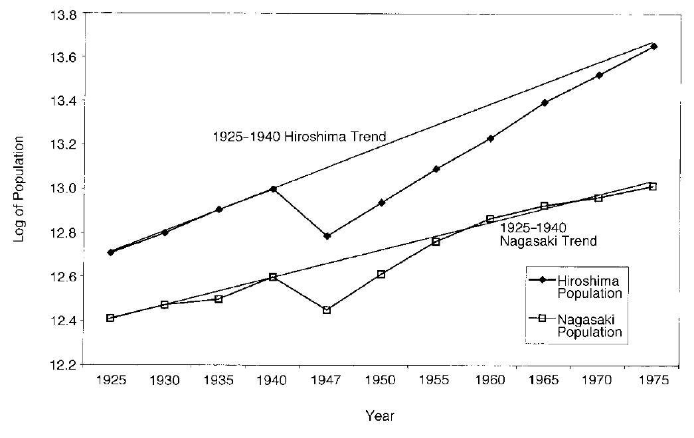
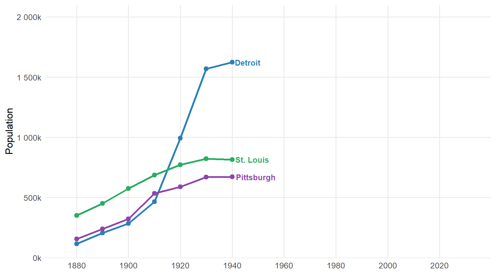
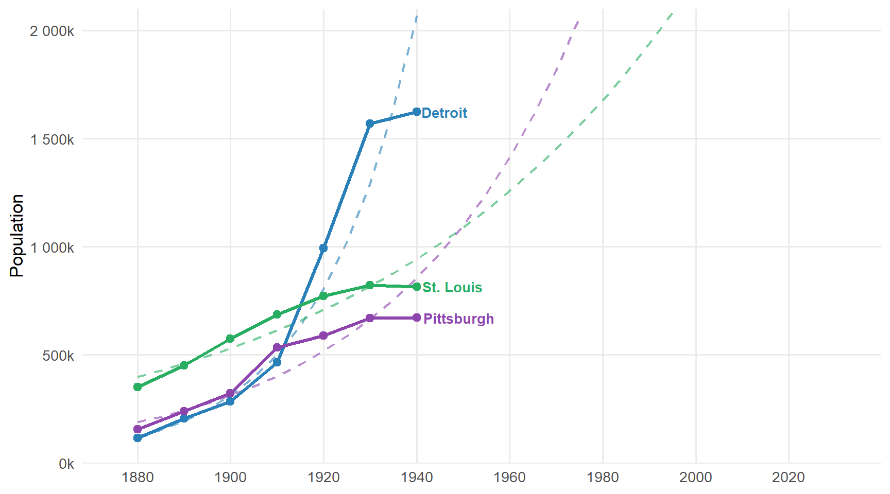
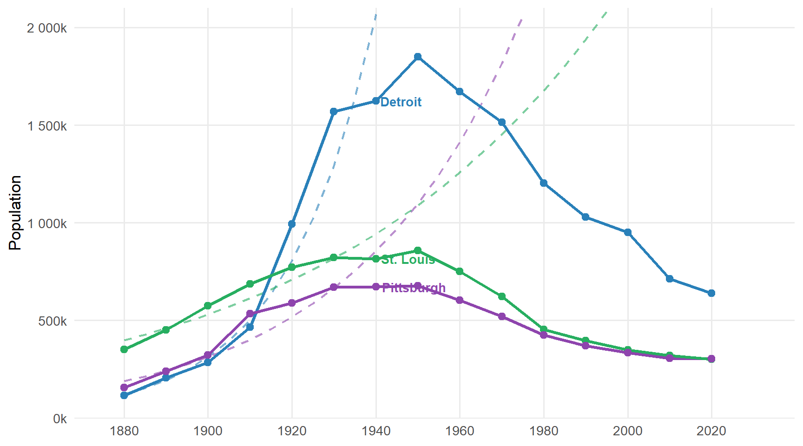
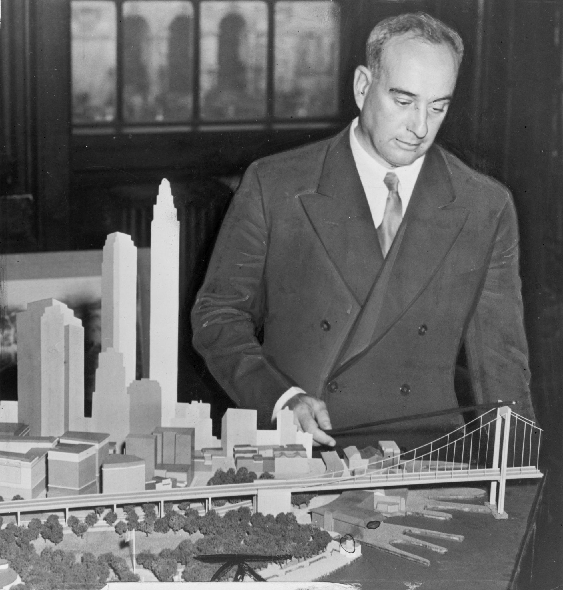
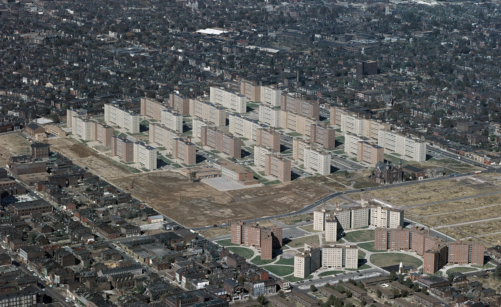
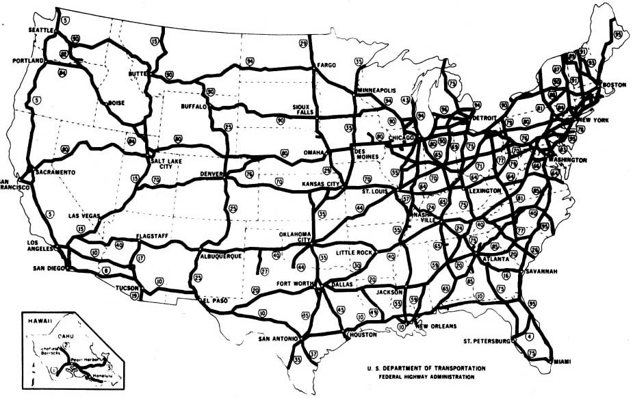
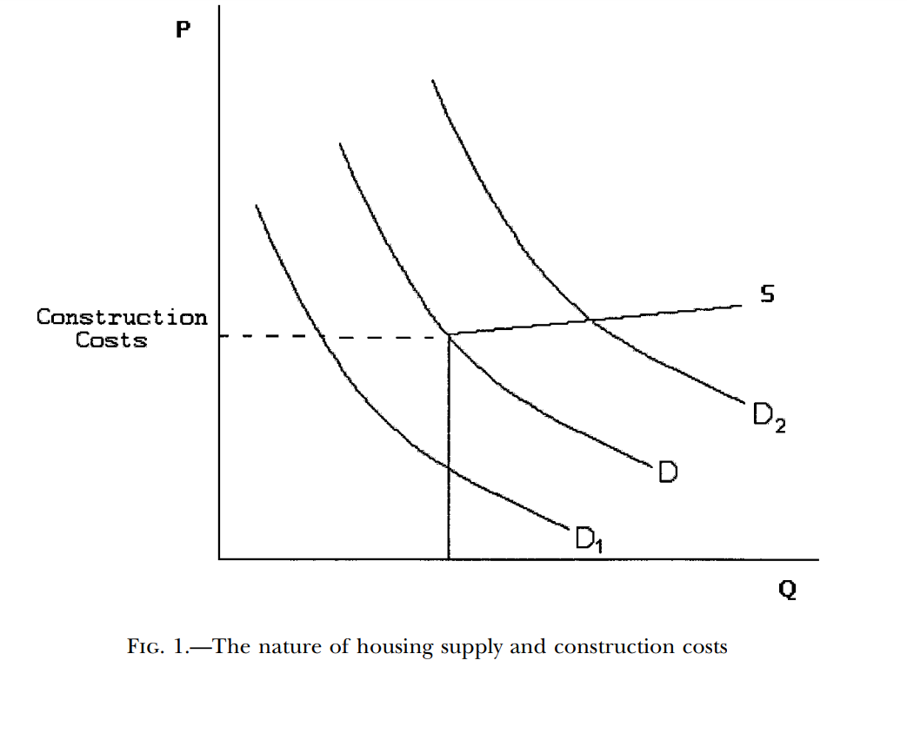
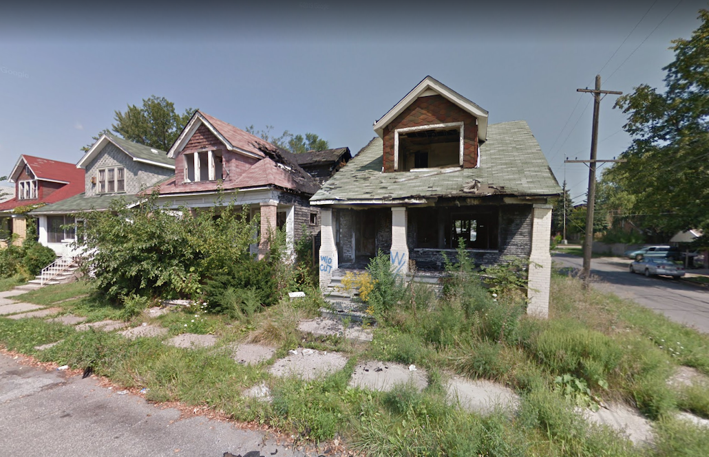

POLS 4641: The Science of Cities

Source: Davis & Weinstein (2002), Figure 2



The comparison with Japan suggests that US urban decline was not inevitable.
Instead it reflects a deliberate policy choice—at federal, state, and local levels—to radically reinvent our cities.
This period of “Urban Renewal” is characterized by:
An emphasis on large-scale, top-down urban planning
Historically unprecedented investments in highway infrastructure
We’ll conclude by discussing why urban decline is often painfully slow and self-reinforcing.
You’ve read Caro’s introduction to Robert Moses — the man who, more than anyone else, physically remade mid-century New York City.
Moses was never elected to public office; he accumulated power through a web of appointed positions and public authorities accountable to no one but the bondholders.
“It is impossible to say that New York would have been a better city if Robert Moses had never lived. It is possible to say only that it would have been a different city.” (Caro 1975, pg. 21).
But Moses was not unique in his philosophy or methods…

Take 5-10 minutes to explore these before-and-after aerial photographs. Which city looks most dramatically different, and why?
The changes we see in US urban landscapes reflect an intellectual movement that Scott (1998) calls “High Modernism”.
The High Modernist dream was that, by building cities according to a rational plan, they would eliminate the inefficiency, disorder, and poverty of the organic city.
The Housing Act of 1949 authorized federal subsidies and loans for “slum clearance” and public housing construction.
Pruitt-Igoe (St. Louis, 1956): 33 towers for 15,000 residents, hailed as a masterpiece of modern design — demolished less than 20 years later.
Cabrini-Green (Chicago): a similar story. High-rise towers that concentrated poverty, destroyed existing community structure, and became symbols of policy failure.

It worked, briefly. Then the second generation of trees collapsed. What happened?
Planners could measure and optimize what was legible — board-feet of timber. What they couldn’t see was the complex ecology that made the forest viable.
Urban renewal repeated this mistake: optimizing for legible metrics (population density, green space, traffic flow) while destroying the social fabric that made neighborhoods function.
This period also saw unprecedented federal investment in highway infrastructure.
The Interstate Highway System is a remarkable feat of civil engineering. But it also contributed to urban decline in two ways:
Displacement: demolished hundreds of urban neighborhoods, displacing more than 1 million people from their homes (US DOT estimates).
Suburbanization: made it practical to live far from city centers, draining population and tax base from the urban core.
This is a surprisingly thorny chicken-and-egg question to answer.
Did people move to the suburbs because of highways, or did we build highways to cities that were already suburbanizing?
A clever solution to the problem: look at the Eisenhower Administration’s original plans for the Interstate Highway System (Baum-Snow 2007).
Cities that happened to be central nodes in the national network got more highway construction — regardless of their pre-existing growth trends.
Each additional highway ray through a city reduced its central population by about 18%.

Once population loss begins, cities face a structural problem: durable housing.
Detroit built housing for 1.8 million people. Only ~640k live there today. That surplus housing stock causes property values to collapse (glaeserUrbanDeclineDurable2005?).
US cities rely heavily on property taxes for revenue. Collapsing values mean collapsing budgets.
This creates a vicious cycle: population loss → fiscal stress → worse services → more population loss.

The vicious cycle of urban decline (Manville and Kuhlmann 2018):
Shrinking population → lower property values → less tax revenue
Less revenue → cuts to schools, police, sanitation
Worse services → more people and businesses leave
Repeat.
The United States is unusual among wealthy nations where “inner city” is associated with poverty. In most of Europe, central neighborhoods are where the wealthy live.

Urban renewal programs demolished functioning neighborhoods in the name of modernization.
The Interstate Highway System made it practical and affordable to abandon the urban core.
Durable housing ensured that once a city started losing population, it was self-reinforcing.